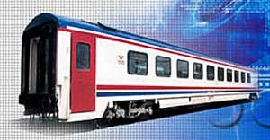
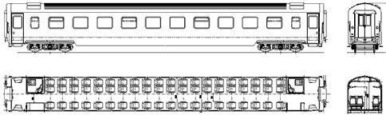
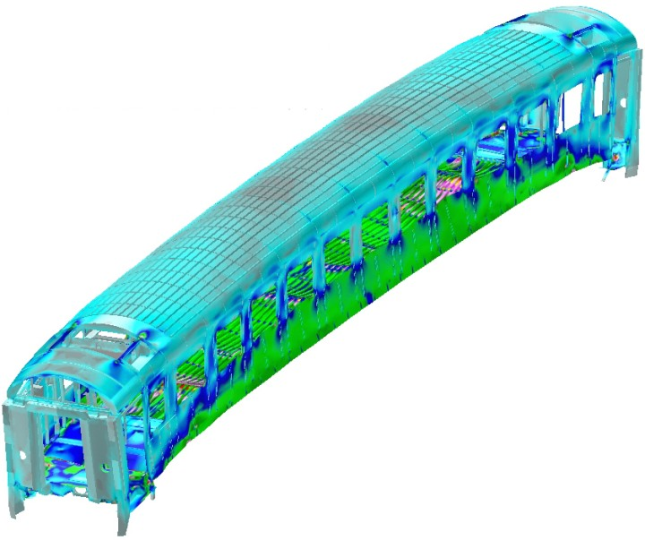
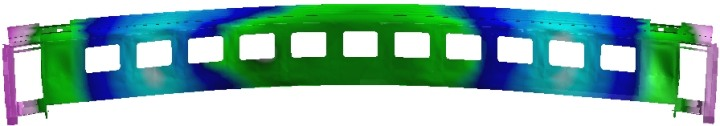
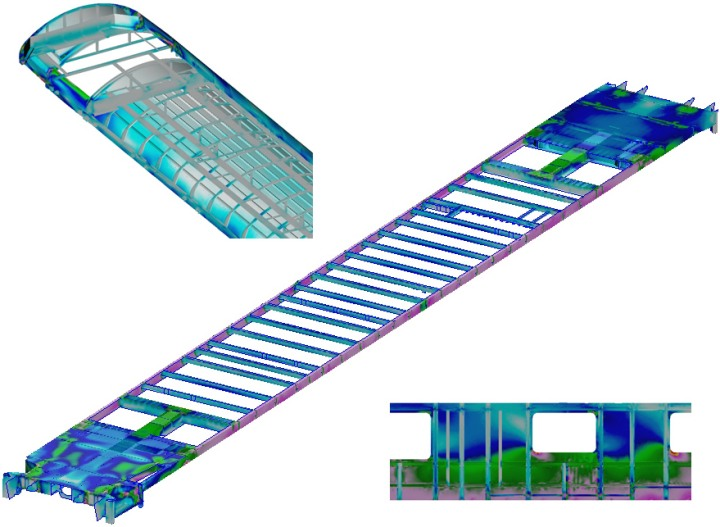

Not: Bu yazý, ilk defa TurkCADCAM.net
Dergisi Ocak-Þubat 2006 Sayýsýnda yayýnlanmýþtýr.
TÜVASAÞ "Türkiye Vagon Sanayii Anonim Þirketi", TCDD Genel Müdürlüðü'nün "Baðlý Ortaklýðý" olarak faaliyet göstermektedir. Demiryollarýmýzdaki 1600 civarýndaki yolcu vagonunun üreticisi olarak tamamýnýn bakým ve onarýmýný yapmaktadýr.
TÜVASAÞ, þu an kullanýmda olan yolcu ve yemek vagonlarýnýn mukavemet hesaplarýný uluslararasý ERRI ve UIC standartlarýna uygun olarak gerçekleþtirmek istemiþtir. Bu standartlarda belirtilen testler gerçek fiziksel prototipler üzerinde yapýlmaktadýr. Bu testlerin tamamýný gerçekleþtirmek için gerekli test altyapýsý mevcut olmamakla beraber oldukça pahalý ve zor bir iþlemdir. Uluslararasý standartlar artýk testler yerine sonlu elemanlar simülasyonlarýný da kabul etmektedir. TÜVASAÞ da ilgili analizlerini sonlu elemanlar yöntemi kullanarak Bias Müh. ile beraber gerçekleþtirmiþtir.

Mevcut vagonlarýn yapýsýnýn çeþitli yükler altýndaki davranýþýnýn belirlenmesi ve bundan sonra üretilecek vagonlarýn kalitesinin arttýrýlmasý yönünde çalýþmalara baþlamýþtýr. Bu amaçla MSC.Software'in sanal ürün geliþtirme platformunda bulunan MSC.Sofy, MSC.Patran, MSC.Fatigue ve MSC.Nastran yazýlýmlarý kullanýlmýþtýr.
TÜVASAÞ yetkilileri ile beraber mukavemete etki eden parçalar tespit edilmiþ ve bu parçalarýn orta yüzeylerinden geçen üç boyutlu CAD yüzey modelleri oluþturulmuþtur. Bu modeller kullanýlarak sonlu elemanlar aðý oluþturulmuþ ve kaynak baðlantýlarý yapýlmýþtýr. Sonlu elemanlar aðý ve kaynak baðlantýsý MSC.Sofy ve MSC.Patran ile gerçekleþtirilmiþtir.

Þekil 1. Basma yüklemesi altýnda abartýlý deforme olmuþ þekli ve gerilme daðýlýmý
Vagonlarýn sonlu elemanlar aðý, gerek yapýlan analiz tipleri ve gerekse istenilen çýktýlara baðlý olarak, MSC.Nastran'ýn geliþtirilmiþ kabuk elemanlarý ile gerçekleþtirilmiþtir. Kaynak baðlantýsý için RBE2 adlý MPC (Multi point constraint) tipi rijit elemanlar kullanýlmýþtýr. Her iki vagonun sonlu elemanlar modelinde de yaklaþýk 350.000 kabuk ve mpc eleman kullanýlmýþtýr. Modeller yaklaþýk 2.000.000 serbestlik derecesinden oluþmaktadýr.

Þekil 2. Vagonun 1. Eðilme mod þekli
Statik mukavemet hesaplarý yapýlýrken, yükleme þekilleri, UIC 566 OR, UIC 577 OR ve ERRI Standartlarý çerçevesinde TÜVASAÞ yetkilileri ile belirlenmiþtir. 8 farklý yükleme þekli uygulanmýþtýr. Standartlarda verilen yükleme koþullarý altýnda vagon sandýðý gerilme analizleri, orta nokta deplasman hesabý, doðal frekanslarý hesabý ve yorulma ömrü hesaplarý gerçekleþtirilmiþtir. Vagonun tamponlardan çarpma kuvvetine maruz kaldýðý durum için genleþme (strain) enerjisi daðýlýmý incelenmiþtir. Analiz sonuçlarý standartlarda belirtilen sýnýr deðerler ile karþýlaþtýrýlmýþtýr.

Þekil 3. Ana komponentlerin gerilme daðýlýmý
Analizlerde elde edilen sonuçlar standartlarda izin verilen maksimum deðerler ile karþýlaþtýrýlmýþtýr. Vagon sandýðý yapýsýnda meydana gelen gerilmeler ve deplasmanlar, hesaplanmýþtýr ayrýca vagon sandýðýnýn doðal frekans analizleri yapýlmak suretiyle operasyonel tahrik frekanslarýnýn vagonun doðal modlarýyla çakýþmadýðý belirlenmiþtir.
Optimizasyon amacýyla fazla mukavim görülen ve sýnýr deðerlere yakýn bölgelerde iyileþtirici öneriler geliþtirilmiþtir. Bu sayede emniyet katsayýsý artýrýlarak ayný zamanda aðýrlýktan da tasarruf edilmesi amaçlanmýþtýr. Gerçekleþtirilen sonlu eleman analiz çalýþmalarý neticesinde yolcu ve yemek vagonlarýnýn uluslararasý standart testlerinin simülasyonlarý yapýlmýþ olup ileriye dönük olarak da muhtemel deðiþikliklerin kolayca test edileceði sanal prototipler geliþtirilmiþ.
Projede Kullanýlan MSC.Software yazýlýmlarý:
MSC.Patran: Sonlu eleman modelleme yazýlýmý
MSC.Nastran: Dünyanýn en çok kullanýlan sonlu eleman analiz programý
MSC.Fatigue: Sonlu eleman tabanlý ömür ve dayanýklýlýk yazýlýmý
MSC.Sofy: Ýleri düzey sonlu eleman modelleme ve montaj programý
TÜVASAÞ hakkýnda (www.tuvasas.com.tr):
TÜVASAÞ, tesis, makina parký ve üretim teknolojileri, bilgi birikimi ve nitelikli personeli ile yolcu vagonu üretimi ve onarýmý konusunda Türkiye'de ve bölgedeki ülkeler arasýnda lider bir kuruluþtur. Raylý taþýmacýlýðýn önem kazandýðý ve raylý araç kullanýmýnýn hýzla arttýðý günümüzde, Türkiye'de ve bölge ülkeleri arasýnda TÜVASAÞ'ýn önemi hýzla artmaktadýr.
TÜVASAÞ, 1986 yýlýnda Türkiye Vagon Sanayii A.Þ. adýyla TCDD'nin baðlý ortaklýðý olarak yeniden yapýlanmýþ, bu yapý kuruluþta modern iþletmeciliðin uygulanmasýný saðlamýþtýr. Bu tarihten itibaren, Ar-Ge çalýþmalarýnýn da baþlamasýyla tasarýmdan üretime kadar TÜVASAÞ markasý taþýyan araçlar yapýlmýþtýr.
CAD programlarý ile araçlarýn tasarýmý, statik ve dinamik mukavemet hesaplarýnýn bilgisayar ortamýnda yapýlabilmesi TÜVAÞAÞ'ý daha kapsamlý projeleri yapabilecek seviyeye ulaþtýrmýþtýr.
Modernizasyon projeleri çerçevesinde deðiþik dönemlerde imal edilmiþ yolcu vagonlarý standardize edilmiþ projeler ile yeniden servise alýnmaktadýr. Bu projeler çerçevesinde modüler tasarlanmýþ WC modülleri, iç kaplama elemanlarý, sahanlýk kaplama elemanlarý kullanýlmaktadýr. Farklý üretilmiþ araçlara standardize edilmiþ ekipmanlar adapte edilmektedir. Böylece demiryolu iþletmeleri için kolay kullaným, uzun ömür saðlanmakta ve yedek parça stok seviyeleri düþürülmektedir.
Modernize edilen araçlarda yolcu konforunun arttýrýlmasý amacýyla akustik ve termal izolasyon iyileþtirilmektedir. Böylece daha az gürültü ve termal olarak daha homojen bir ortam saðlanmaktadýr. Görsel konfor için modern görünüþlü iç ortam oluþturulmaktadýr.
Bias Mühendislik hakkýnda (www.bias.com.tr):
1997'den beri Ar-Ge sektöründe faaliyet gösteren Bias, mühendisliðin çeþitli dallarýna yönelik proje hizmeti vermekte ve ürün satýþý yapmaktadýr. Bilgisayar Destekli Mühendislik (CAE) yazýlýmlarý alanýnda MSC.Software'in temsilciliðini üstlenmiþtir. Sonlu eleman yöntemi, dinamik simülasyon, ömür analizleri, sistem simülasyonu alanlarýnda hizmet veren MSC.Software, Sanal Ürün Geliþtirme (Virtual Product Development) felsefesi altýnda ürün geliþtirme sürecinin baþýndan sonuna kadar yapýlacak mühendislik çalýþmalarýnda tek ve ortak bir platform sunmaktadýr.
Test ve ölçüm cihazlarý konularýnda da dünyanýn önde gelen firmalarý ile ortak çalýþan Bias Mühendislik, Ar-Ge faaliyetlerinde yan sanayii olarak görev almak ve firmalarýn ürün geliþtirme süreçlerine katký saðlamak amacýndadýr. |